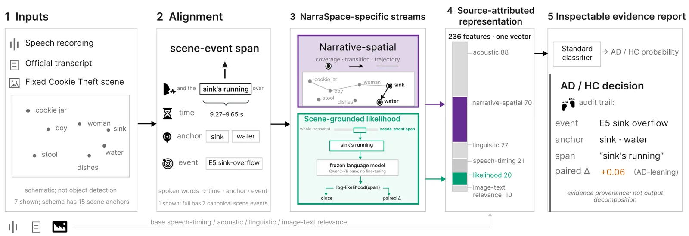
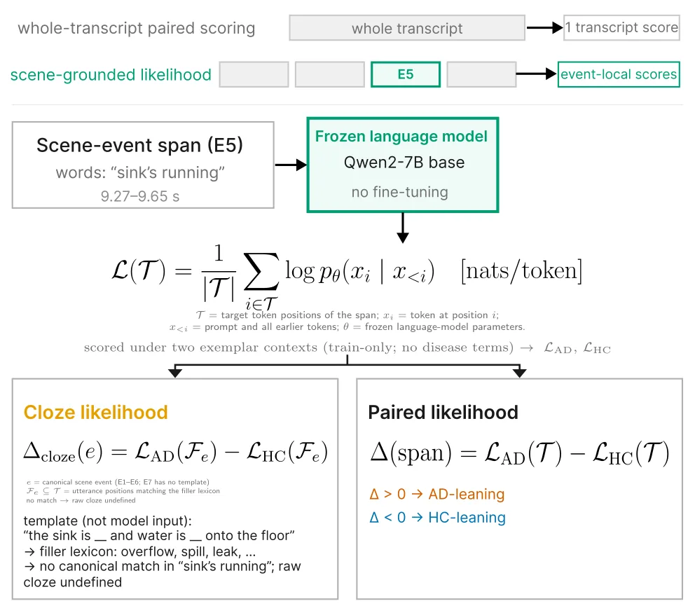
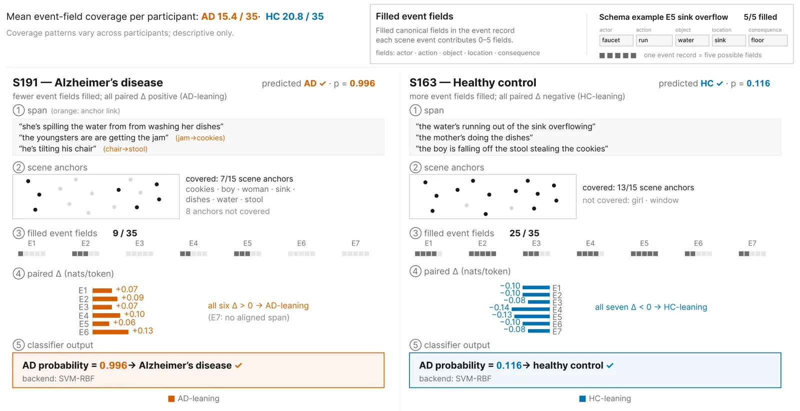

O Problema da Caixa Preta em Classificação de Demência por Fala
Classificar demências, especialmente a Doença de Alzheimer (AD), a partir de fala espontânea é uma área promissora, mas complexa. O benchmark ADReSS (Alzheimer’s Dementia Recognition through Spontaneous Speech) padroniza essa tarefa pedindo que participantes descrevam uma imagem específica: a cena 'Cookie Theft' (Roubo de Biscoito). A vantagem desse cenário compartilhado é que todos os participantes falam sobre os mesmos objetos e ações. No entanto, a maioria dos métodos atuais trata a transcrição como um bloco único, gerando um vetor de características ou uma pontuação final que não revela onde, na fala, as evidências da doença estão concentradas.
Essa opacidade é um problema para a aplicação clínica. Um classificador que diz 'provável Alzheimer' sem mostrar quais frases, pausas ou omissões levaram a essa conclusão é difícil de validar. Trabalhos anteriores tentaram alinhar palavras a regiões da imagem ou usar modelos de linguagem pré-treinados, mas muitas vezes perdem o rastro de como uma pontuação numérica foi derivada do texto original. Não fica claro se a decisão veio de um objeto não mencionado, de uma ação mal descrita ou de padrões temporais na fala.
NarraSpace, paper recente da The Chinese University of Hong Kong Shenzhen, propõe uma mudança de foco: em vez de apenas maximizar a precisão, o sistema prioriza a rastreabilidade (source attribution). A ideia é construir uma representação onde cada medida classificatória esteja ligada explicitamente ao seu origem: a utterance específica, o intervalo de tempo da fala e o elemento da cena correspondente. Isso permite que um revisor humano, potencialmente um clínico, inspecione não apenas o resultado, mas o processo de extração de evidências.
O paper argumenta que manter essa conexão entre estrutura da cena, medições de modelos de linguagem e temporização da fala cria uma base para auditoria. Não se trata apenas de atribuir importância a features individuais para explicar uma decisão final, mas de tornar explícita a construção dos próprios inputs do classificador. Se o modelo falha, é possível ver exatamente qual trecho da fala e qual âncora visual contribuíram para o erro, algo que pontuações agregadas de modelos de linguagem não oferecem.

A Arquitetura NarraSpace: Âncoras, Eventos e Rastreamento
A base do NarraSpace é a cena 'Cookie Theft', dividida em 15 âncoras de cena (scene anchors) nomeadas, como 'torneira', 'menina', 'banco'. O sistema processa a transcrição oficial do participante (limpa de instruções do examinador e marcadores de anotação, mas mantendo disfluências) e usa o WhisperX para alinhar forçadamente as palavras ao áudio, obtendo timestamps precisos. Cada palavra falada é então mapeada para uma dessas 15 âncoras.
O mapeamento não é trivial. Primeiro, tenta-se por regras de frases e lookup lexical. Se falhar, usa-se similaridade de embedding: o modelo all-mpnet-base-v2 compara o embedding da palavra (com contexto de até duas palavras anteriores e uma posterior) com protótipos de embeddings das descrições naturais das âncoras. Só há match se a similaridade cosseno for maior que 0,45 e a margem para o segundo melhor match for maior que 0,08. Palavras não atribuídas são descartadas para esta análise espacial.
Com as palavras mapeadas, o sistema identifica 'visitas': sequências consecutivas de menções à mesma âncora, ignorando pausas ou palavras não atribuídas entre elas. Além disso, define-se um esquema de 7 eventos semânticos da cena, como 'alcançar o biscoito', 'instabilidade do banco', 'menina observando', 'lavar louça', 'transbordamento', 'desconhecimento do perigo' e 'contexto da cozinha'.
Para cada evento, o NarraSpace recupera todas as utterances (frases ou segmentos) que contêm palavras-chave correspondentes aos campos lexicais desse evento (agente, ação, objeto, localização, consequência). Essas utterances são concatenadas na ordem narrativa para formar o 'texto do evento'. Importante: o mesmo trecho de fala pode ser recuperado por múltiplos eventos, e o sistema não resolve negações ou implicações semânticas profundas; ele apenas registra a presença lexical. O resultado é uma estrutura rica onde cada evento tem um texto associado, timestamps e as âncoras mencionadas.

Medições Narrativo-Espaciais e o Papel do Modelo de Linguagem
Com as utterances recuperadas para cada evento, o NarraSpace calcula 70 características narrativa-espaciais. Estas incluem métricas de cobertura (quantas das 15 âncoras foram mencionadas), ordem de visita (distância entre os centros das caixas delimitadoras das âncoras na imagem), tempo de permanência (dwell time) em cada âncora e desvios em relação a uma referência de controles saudáveis. Essas features capturam aspectos cognitivos e linguísticos, como desorganização narrativa ou omissão de detalhes críticos.
O componente central de classificação é o uso de um Modelo de Linguagem (LLM) congelado. Diferente de abordagens que treinam um classificador do zero sobre embeddings brutos, o NarraSpace usa o LLM para contrastar a verossimilhança (likelihood) do texto recuperado. Para cada evento, o sistema pega exemplos de treinamento de participantes com Alzheimer (AD) e de controles saudáveis (HC). Ele calcula o log-likelihood das tokens do evento-alvo quando precedidas por exemplos de AD e quando precedidas por exemplos de HC.
A diferença média desses log-likelihoods gera uma 'contraste de evento'. Basicamente, o sistema pergunta: 'Este trecho de fala soa mais como a fala típica de um paciente com AD ou de um saudável, dado o contexto do modelo?'. Para alguns casos, usa-se também um 'contraste de cloze', focando apenas nas tokens que foram explicitamente mapeadas para os campos lexicais do evento. Isso fornece uma medida probabilística de quão 'anômalo' ou 'típico' é o discurso do participante em relação a cada aspecto da cena.
Essas medidas de likelihood, somadas às features narrativa-espaciais e descritores linguísticos/acústicos básicos, formam um pool de 256 candidatos. O sistema não usa todos. Um processo de seleção de features reduz esse pool para 60 inputs principais. Essa etapa é crucial, pois elimina ruído e redundância, mantendo apenas as combinações de evidências espaciais, temporais e linguísticas que melhor discriminam as classes no conjunto de treinamento.
Classificação e Resultados no Benchmark ADReSS
Os 60 inputs selecionados são alimentados em um classificador de Vetores de Suporte (SVM) fixo. Os resultados são avaliados no conjunto de teste oficial do ADReSS, composto por 48 participantes. O desempenho principal do sistema NarraSpace atinge uma precisão média de 80,88% (com desvio padrão de 2,56%) sobre 50 sementes diferentes. Ao agregar as probabilidades previstas em vez de usar apenas a classe majoritária, a precisão sobe ligeiramente para 81,25%, com uma Área sob a Curva ROC (AUC) de 91,32%.
É importante contextualizar esses números. Embora 80-81% seja um resultado competitivo, o paper não posiciona o NarraSpace como um estado da arte absoluto em precisão bruta. O valor agregado reside na consistência e na capacidade de inspeção. O paper mostra que remover as features narrativa-espaciais reduz a precisão média, indicando que a estrutura espacial e temporal da fala é informativa. Além disso, o 'stream de likelihood' muda quais participantes são classificados corretamente, mesmo quando a precisão agregada não muda drasticamente, sugerindo que ele captura nuances diferentes de outras features.
O sistema também reporta incerteza em nível de participante, derivada das 50 execuções com diferentes sementes. Isso é raro em benchmarks de classificação simples e adiciona uma camada de robustez à avaliação. A tabela de resultados do paper compara o NarraSpace com reproduções de outros métodos (como Xiao-Mistral), mostrando que o SVM do NarraSpace é competitivo em métricas padrão, mas com a vantagem adicional de fornecer o rastro de evidências completo.

Auditoria e Limitações da Abordagem
A grande contribuição do NarraSpace é a capacidade de auditoria. A Figura 3 do paper ilustra relatórios onde se pode ver, para um participante específico, quais eventos foram cobertos, quais âncoras foram mencionadas e qual foi a probabilidade estimada de AD para aquele trecho. Isso permite que um revisor humano verifique se o modelo está 'prestando atenção' nos lugares certos. Por exemplo, se um paciente com AD omite o 'transbordamento' (um evento crítico de perigo), o sistema registra essa ausência e a baixa likelihood em relação a controles, tornando a evidência visível.
Contudo, o paper admite limitações significativas. O mapeamento lexical não resolve negações (ex: 'não vejo a torneira' pode ser mapeado como presença da âncora 'torneira'). A representação é baseada em um único benchmark em inglês (ADReSS), o que limita a generalização para outras línguas ou culturas. O sistema também não avalia se essa organização realmente melhora a precisão ou velocidade da inspeção clínica por humanos; isso permanece como uma questão empírica futura.
Além disso, a avaliação é exploratória. O mapeamento de âncoras é auditado, mas não há anotação direta em nível de evento para validar perfeitamente a recuperação de utterances. O paper sugere que comparações futuras devem incluir cohortes independentes de participantes e avaliações diretas de como a apresentação dessas evidências auxilia o julgamento clínico. A atribuição da decisão final do classificador também depende do limiar (threshold) do SVM, que não é parte intrínseca da representação NarraSpace.
Conclusão: Transparência como Recurso Clínico
NarraSpace demonstra que é possível construir classificadores multimodais para demência que não apenas predizem, mas explicam suas fontes de evidência. Ao vincular fala, texto e imagem através de um esquema de cena fixo e manter registros de origem, o sistema transforma a classificação de uma caixa preta em um processo inspecionável. Isso é particularmente relevante para áreas sensíveis como a saúde, onde a confiança no modelo depende da capacidade de entender suas falhas.
Os resultados mostram que a precisão é competitiva (~81%), mas o ganho real está na estrutura de dados gerada. Para pesquisadores, isso oferece um novo conjunto de features (narrativo-espaciais e de likelihood contrastada) para estudar a linguagem em demência. Para clínicos, o potencial é oferecer relatórios que juxtapõem resumos quantitativos com o áudio e texto originais, facilitando a revisão de casos complexos.
O paper deixa em aberto se essa transparência se traduz em melhores decisões clínicas na prática. Testar isso exigiria estudos com usuários reais, medindo não apenas a acurácia da classificação, mas o esforço cognitivo e a confiança dos profissionais de saúde ao usar essas ferramentas. Enquanto isso, NarraSpace estabelece um padrão para como sistemas de IA em saúde podem ser projetados para serem auditáveis desde a primeira linha de código.
O que fica
- NarraSpace vincula palavras faladas a elementos visuais fixos (âncoras) e eventos predefinidos, mantendo registros de origem auditáveis.
- Um modelo de linguagem congelado compara a verossimilhança de utterances recuperadas sob contextos de Alzheimer e controles saudáveis.
- O sistema atinge 80,88% de precisão no benchmark ADReSS, mas seu valor principal é a transparência na construção de features.
- A abordagem permite revisar como decisões clínicas automatizadas são derivadas de evidências específicas da fala e da cena.
Paper original: NarraSpace: Multimodal Scene-Grounded Evidence for Picture-Description Dementia Classification
Comentários
Nenhum comentário ainda. Seja o primeiro.